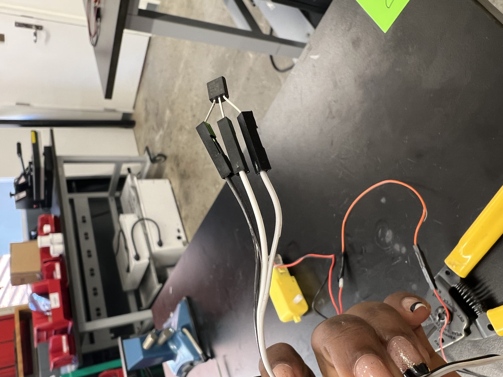
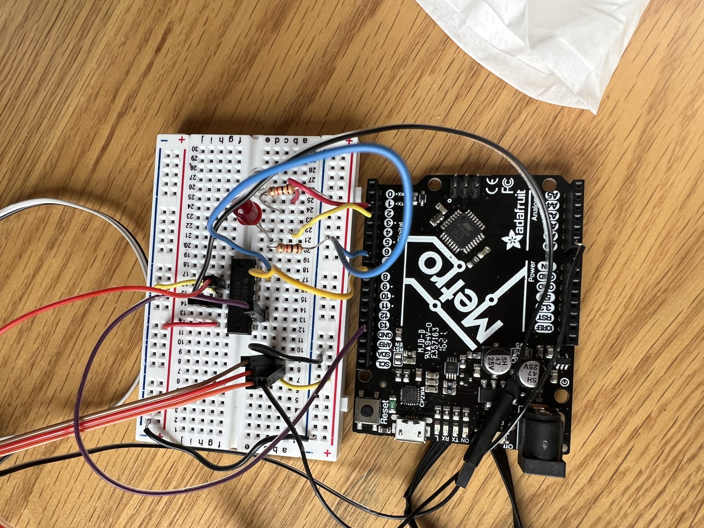

### Week 6: Electronic input devices
Hello there and welcome to the end of week 6,
For this week's assignment, we had to:
<ul>
<li>Make a capacitive sensor to measure a physical quantity with your microcontroller.</li>
<li>Select another sensor of your choosing (temperature, microphone, etc.)</li>
<li>Calibrate each sensor and visualize data in the form of a table or graph. Discuss the relationship between the signals recorded by your microcontroller and the physical quantities that you're measuring.</li>
</ul>
<h4>Using a capacitive sensor: </h4>
Lauren (from this class as well) and I explored how to make a capacitance-based sensor as we had just been taught in lecture.
This video here below show us trying to get some results from modifying the displacement of the plates
<video width="620" height="440" controls src="IMG_4896.mp4"></video>
The actual data should be uploaded soon. But from the video, you should've noticed that as the microcontroller was recording some spikes as we got the plates to be closer together indicating that the capacitance between them was increasing. That can be explained by the fact that Capacitance is directly proportional to the electrostatic force field between the plates. This field is stronger when the plates are closer together. It follows that The closer the plates, the lower the voltage for the same charge. Since capacitance is charge per unit of potential, the closer the plates the higher the capacitance all other factors kept constant. So if the distance between electrodes is reduced , then the Capacitance will increase.
<h4>Using another sensor and recording the data: </h4>
This is the part I was excited about. I got the chance to revisit two of my previous projects and combine them together. If you check "Week 3: <a href='./Week3.html'></a>", you will notice that I had attempted to make a water mill. I got the structure to work (meaning the wheel was turning and water was being displaced) but it was not a stand-alone structure which made it impractical to use.
Fast forward to "Week 4: <a href='./06_Week4/Week4.html'></a>", I made a Love-O-meter, which measured how compatible one person was to another based on their body temperature and was able to indicate with the help of some colored LED lights, how "hot" one person was. Everything was based on a temperature sensor that was connected to a micro-controller and some arduino code to operate it.
For this week, I decided to incorporate both weeks' projects together to make a structure that was controlled by a sensor. Essentially, I wanted to make my water mill be functional only after a certain temperature was recorded by the temp sensor and activated the motor attached to the center of the water mill.
What had failed in week 3 was the support part of the structure. So I focused more time thinking and design a simple structure that could support the motor and the breadboard while protecting them from water splash.
Here below is a picture of the structure. I used the scroll saw to cut the pieces of wood I wanted. However, one of the limitations of the scroll saw is that I can't make cuts in the middle, so in order to connect the vertical to the horizontal piece, I used the laser cutter to cut the exact dimension of the hole I wanted and where I wanted it. You'll also notice that the small horizontal piece extends from the back and front and that was intentionally done so in order to support the motor and the breadboard.
The next step was to make sure the sensor had the correct length. I wanted the sensor to be long enough to reach the water bucket and still be connected to the breadboard. The first idea was to solder wires after wires to create the desired length, but instead, I decided to attach several breadboard jumper wires with each other which did the job as shown here below
<div class="row">
<div class="column">
<img src="IMG_4931.jpg" alt="TMP" style="width:100%">
</div>
<div class="column">

</div>
</div>
The following task was more complicated for me. The circuitry.
I first ran into the problem that I learned that I needed to use a bridge to control my DC motor on the micro-controller. The one I initially used... was not helpful.
Here is a picture of my first iteration.
<div class="row">
<div class="column">

</div>
<div class="column">
<img src="circuitry.png" alt="circuitsketch" style="width:100%">
</div>
</div>
and its arduino code:
<pre>
<code>
int celsius = 0;
int fahrenheit = 0;
int Ena=7;
void setup()
{
Serial.begin(9600);
pinMode(A0, INPUT);
pinMode(13, OUTPUT);
pinMode(8, OUTPUT);
pinMode(2, OUTPUT);
pinMode(3, OUTPUT);
analogWrite(Ena,255);
}
void loop()
{
celsius = map(((analogRead(A0))), 0, 1023, 30, 70);
fahrenheit = ((celsius * 9) / 5 + 32);
Serial.print(celsius);
Serial.print(" C, ");
Serial.print(fahrenheit);
Serial.println(" F");
if (celsius < 40) {
digitalWrite(2, HIGH);
digitalWrite(3, LOW);
digitalWrite(8, LOW);
digitalWrite(13, LOW);
}
if (celsius > 40)
{
digitalWrite(2, LOW);
digitalWrite(3, HIGH);
digitalWrite(13,LOW);
digitalWrite(8, HIGH);
}
delay(10);
}
</code>
</pre>
However, Nathan came and saved my project and directed me to this: <a href='https://nathanmelenbrink.github.io/ps70/04_arduino/L9110.html'>Use the L9110 H Bridge Power Driver to drive a motor.</a>
The next step was to first figure out how to command the motor using the bridge and what the arduino and circuit would be. The next step would've been to then incorporate the sensor to activate the whole system.
The first time I tried, it did not work out because I had plugged my motor into the wrong port (motor B instead of motor A) on the bridge. After catching that mistake and correcting it, the motor was able to run as shown in the video Below
<video width="620" height="440" controls src="IMG_4963.mp4"></video>
All the details on the arduino code as well as the circuit can be found here: <a href='https://nathanmelenbrink.github.io/ps70/04_arduino/L9110.html'>Use the L9110 H Bridge Power Driver to drive a motor.</a>
I still had to figure out how to connect the sensor.
After tweaking my original circuit to what is shown here below, I also modified my code to incorporate the new bridge.
Here is what the new code looked like :
<div class="row">
<div class="column">
</div>
<div class="column">
<img src="circuitry.png" alt="circuitsketch" style="width:100%">
</div>
</div>
and its arduino code:
<pre>
<code>int celsius = 0;
int fahrenheit = 0;
int Ena=7;
const float baselineTemp = 22;
const int sensorPin = A0;
void setup()
{
Serial.begin(9600);
//analogReadResolution(12); //Using a 32-bit ATSAM microcontroller that has up to 12 bit resolution. 4095 max.
pinMode(A0, INPUT);
pinMode(13, OUTPUT); // define pin 13 for A-1B (direction)
pinMode(12, OUTPUT); // define pin 12 for A-1A (PWM Speed)
pinMode(4, OUTPUT); // 4= green LED
pinMode(3, OUTPUT); // 3= red LED
analogWrite(Ena,255);
}
void loop()
{
int sensorVal = analogRead(sensorPin);
Serial.print("Sensor Value: ");
Serial.print(sensorVal);
// convert the ADC reading to voltage
float voltage = (sensorVal / 1024.0) * 5.0;
Serial.print(", Volts: ");
Serial.print(voltage);
Serial.print(", temperature in Celsius: ");
Serial.print(" C, ");
// convert the voltage to temperature in degrees
float temperature = (voltage - .5) * 100;
Serial.println(temperature);
// If the temperature is below 40 Fahrenheit, turn on the red LED, turn off the green LED and turn the motor on
if (temperature < 25) {
digitalWrite(3, HIGH);
digitalWrite(4, LOW);
digitalWrite(12, LOW);
digitalWrite(13, LOW);
}
// If the temperature is above 40 Fahrenheit, turn off the red LED, turn on the green LED and turn off the motor
if (temperature > 25)
{
digitalWrite(3, LOW);
digitalWrite(4, HIGH);
digitalWrite(13,LOW);
digitalWrite(12, HIGH);
}
delay(1);
}
</code>
</pre>
Here is a video of the motor responding to the temperature change. Notice that for the sake of this demonstration, I changed the if statement to make it turn when the temperature was warm (so >25):
<video width="620" height="440" controls src="demo.mp4"></video>
Here is the data visualization in the form of a table to show that as the voltage increases, we see a spike:
<video width="620" height="440" controls src="plotter.mp4"></video>
This week shoutout goes to:
<ul>
<li>Nathan for patiently helping me troubleshoot the circui</li>
<li>Ibrahim for his help during OH</li>
<li>Lauren for her moral support</li>
</ul>